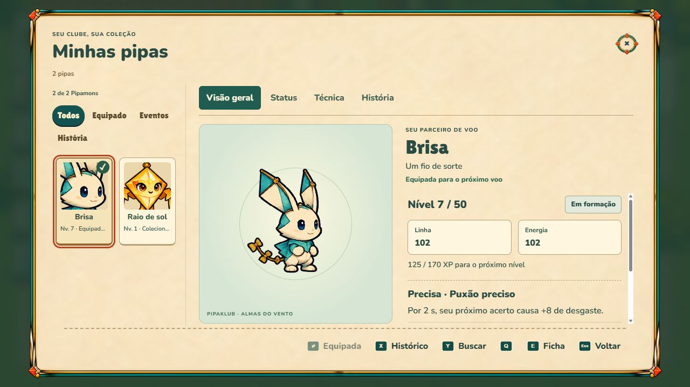
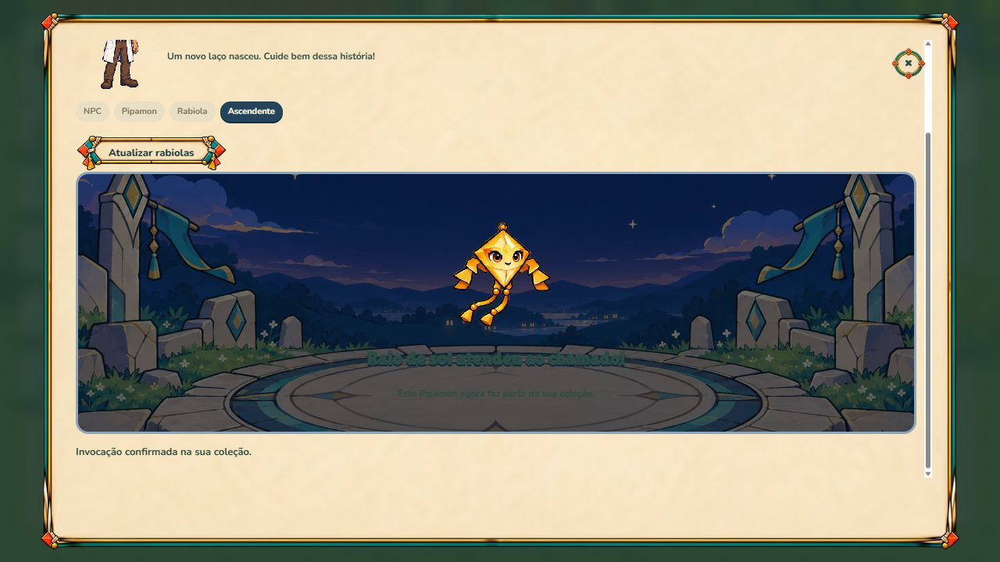

A abertura e os cinco encontros do Morro do Sol foram concluídos. O ciclo de parceiro, combate, desbloqueio, recompensa, salvamento e invocação já funciona. A demo ainda não está pronta para lançamento: falta delimitar seu conteúdo, dar um encerramento próprio e recuperar uma sessão multiplayer interrompida.
DEMO-01 · P0Corrigido parcialmenteDefeito funcional
Recarga do convite deixava a tela sem interface
Observado Na sala com duas contas, recarregar a página com ?sala= deixou apenas o fundo e a faixa do ambiente local. O quintal, a abertura e a tela de amigos estavam ocultos, sem erro no console.
Por que importa Um jogador que abre um convite ou recarrega pode achar que o jogo parou e abandonar a demo.
Próxima ação Foi adicionada offerRoomInvitation(): a sessão autenticada recebe a tela de entrada com código preenchido e pode cancelá-la para voltar ao quintal. A recuperação do assento é o problema separado DEMO-02.
Como aprovar Abrir um convite autenticado, recarregar e cancelar sempre deixa um caminho visível. Reteste visual e teste de regressão passaram.
src/courtyard-client.js:40; art.test.mjs: signed-in room invitation
DEMO-02 · P1AbertoDefeito funcional
Reentrada não recupera o jogador da partida
Observado Após entrar, recarregar e tentar Entrar novamente, a mesma conta recebe “Você já entrou nesta sala”. O anfitrião continua vendo a partida até o convidado expirar; não há retomada automática do controle.
Por que importa A demo online não tem um fluxo confiável para uma interrupção comum de navegador. O convite voltar a aparecer não resolve a continuidade da partida.
Próxima ação Implementar retomada autenticada do mesmo assento, vinculada à conta, preservando rodada e placar. Se o assento expirou, explicar e oferecer retorno ou nova entrada. Nunca devolver controle a outra conta.
Como aprovar Duas contas: atualizar a aba por 1 s e por mais tempo, reconectar sem duplicar jogador e sem transferir assento. Testar também sala encerrada e código expirado.
src/index.html: online(action); src/courtyard-client.js: offerRoomInvitation
DEMO-03 · P1AbertoEscopo de lançamento
A versão atual libera conteúdo além da demo
Observado Após Mikka, Beira-Mar foi selecionada e liberada no mapa, com Explorar Beira-Mar disponível. A missão do quintal também passou a apontar para essa trilha.
Por que importa O recorte “início + primeiro bairro + online” ainda não existe no produto; esconder um botão não seria uma barreira suficiente.
Próxima ação Criar uma política de conteúdo da demo compartilhada por navegação e servidor. Permitir Morro do Sol e os modos online aprovados; recusar fases fora do recorte sem apagar progresso ou coleções.
Como aprovar Um pedido direto a uma fase fora da demo também é recusado. Reabrir conta antiga ou usar link não contorna o limite. Jogar online continua disponível.
src/trails.js; src/courtyard-client.js: openCity; src/backend.js
DEMO-04 · P1AbertoExperiência da demo
O final do bairro promete continuação imediata
Observado O texto de vitória de Mikka diz que há outro vento chamando na Beira-Mar e que o bairro seguinte espera pelo jogador. As ações são invocador, caminho e mapa; não há conclusão específica da demo.
Por que importa A pessoa termina sem saber que completou a amostra e pode perceber o limite futuro como conteúdo faltando.
Próxima ação Criar um encerramento da demo depois da recompensa, com resumo do vínculo e do bairro, salvamento confirmado e ações claras para online, explorar novamente e voltar ao clube. Só mostrar links de comunidade ou loja que já existam.
Como aprovar O jogador identifica que concluiu a demo, sabe o que ainda pode jogar e pode voltar à conclusão sem ganhar prêmios duplicados.
src/encounter-story-client.js; src/trails.js: história de morro-5
DEMO-05 · P1AbertoAprendizado
Ataque e rebicada usam nomes que se confundem
Observado A segunda lição chama o ataque com Espaço de rebique. A HUD tem Puxão no R, enquanto as regras também falam em ATACAR, uma ação que não aparece como botão no leque atual.
Por que importa O iniciante pode tentar cumprir a lição usando R, sem entender por que o ataque de Espaço é outra ação.
Próxima ação Fixar um vocabulário único: ataque/corte básico, manobra de linha/rebicada, habilidade do parceiro e esquiva. Mostrar o comando de ataque na HUD ou em uma ajuda sempre acessível.
Como aprovar Um jogador novo consegue explicar a diferença entre Espaço, R, Q/E e Shift após o tutorial, sem consultar uma parede de regras.
src/first-flight.js: lessons; src/index.html: showRules; src/switch-ui-client.js: action fan
DEMO-06 · P1AbertoAprendizado
A esquiva é cobrada antes de ser praticada
Observado As cinco lições cobrem movimento, ataque, recuperação, habilidade e um corte contra Nozinho parado. Zeca já apresenta anel de ameaça e recomenda esquivar; a dupla acrescenta seleção de alvo e cruzamentos simultâneos.
Por que importa Há um salto de leitura entre o treino seguro e os desafios. As derrotas desta auditoria, sozinhas, não medem dificuldade: o teste automatizado tem tempos de reação próprios.
Próxima ação Ensinar uma esquiva guiada e o significado do anel antes do primeiro rival. Antes da dupla, apresentar um exemplo curto de escolha de cruzamento e alvo. Preservar desafio após o aprendizado.
Como aprovar A pessoa executa ao menos uma esquiva e identifica um ataque válido antes de entrar na primeira disputa real.
src/first-flight.js; src/trails.js: morro-1 e morro-3
DEMO-07 · P1AbertoAprendizado
A primeira habilidade é aprovada só por apertar a tecla
Observado A quarta lição termina quando a habilidade entra em recarga. A conclusão diz que cada parceiro tem seu jeito, mas não explica ali o Puxão preciso de Brisa nem pede aproveitar seu efeito.
Por que importa O jogador conhece a tecla, mas pode não entender custo, benefício, duração ou momento de uso.
Próxima ação Mostrar nome e efeito da habilidade do parceiro equipado e pedir um uso que demonstre seu benefício. Distinguir animação de efeito válido no combate.
Como aprovar A lição mostra o efeito específico e deixa claro quando ele começou, terminou e ficou disponível de novo.
src/first-flight.js: lesson 4; src/engine.js: types
DEMO-08 · P1CorrigidoDefeito visual e funcional
Diálogo fechado continuava cobrindo o bairro
Observado Ao entrar no Morro, o diálogo do Sr. Assis continuava visível e citava o quintal. O DOM tinha hidden=true, mas .pilot-dialogue forçava display:grid!important e vencia o estado fechado.
Por que importa Uma grande parte do cenário e dos controles ficava encoberta na primeira chegada ao bairro.
Próxima ação Adicionada uma regra específica para .pilot-dialogue[hidden]. Reteste mostrou display:none e permitiu conversar com Zeca pelo fluxo normal.
Como aprovar Diálogo aberto é visível; fechar, mudar de área e iniciar combate escondem a camada por completo, inclusive os controles.
src/pilot-ui.css: .pilot-dialogue[hidden]
DEMO-09 · P2AbertoOrientação
As instruções de caminhada somem na abertura
Observado No quarto e na sala, o painel mostra lugares e Examinar/E, mas não mostra as instruções de movimento; o piloto esconde #openingHint.
Por que importa É possível avançar pelos nomes dos lugares, porém a exploração com o personagem não fica evidente para quem chega sem conhecer os comandos.
Próxima ação Exibir uma ajuda curta de movimento e interação na primeira exploração e após troca de dispositivo. Reduzir a ajuda depois que a pessoa demonstra a ação.
Como aprovar WASD/setas, clique para caminhar e E/confirmar são descobertos sem depender de conhecimento anterior.
src/pilot-ui.css: #openingHint; src/opening-room-client.js
DEMO-10 · P2AbertoClareza de progressão
Nível do pipeiro e do parceiro parecem contraditórios
Observado Depois dos cinco encontros, Brisa estava no nível 7, mas o cabeçalho do jogador continuava no nível 1. A ficha mostrava “Histórico: 0 conquistas”, embora o bairro estivesse vencido; esse contador representa outro tipo de conquista.
Por que importa O progresso é persistido, mas os nomes podem fazer a pessoa pensar que suas vitórias não contaram.
Próxima ação Rotular Nível do pipeiro e Nível do Pipamon, explicar como cada um evolui e nomear o contador de capturas/transferências de forma específica. Mostrar vitórias de trilha em um lugar próprio.
Como aprovar O jogador distingue XP de conta, XP individual, vitórias e capturas de propriedade.
29-parceiro-nivel7.png
42-colecao-dois-parceiros-1080.png src/pipamon-level-client.js; src/menu-ui.js: inventoryCaptures; src/plaza-client.js: refreshPlazaHUD
DEMO-11 · P2AbertoNavegação
Resultados abrem com foco em fechar
Observado Nas telas de vitória e derrota, o foco inicial foi para o X. O caminho útil, revanche ou próximo encontro, fica em outra região.
Por que importa Quem joga por teclado ou controle precisa procurar a ação principal após cada duelo.
Próxima ação Definir foco contextual em Tentar novamente, Ver meu caminho ou encerramento da demo, preservando a opção de sair e o retorno de foco.
Como aprovar Confirmar depois do resultado executa a ação destacada e esperada, sem fechar por engano.
src/index.html: modal; src/results-client.js; src/encounter-story-client.js
DEMO-12 · P2AbertoLayout
Código da sala quebra em linhas na HUD
Observado Em 1280 x 720, o chip lateral do código dividiu os seis caracteres em mais de uma linha. O código completo continuou disponível no menu da partida.
Por que importa Ler ou ditar o convite pela HUD fica mais difícil.
Próxima ação Usar uma área suficiente para seis caracteres, sem quebra, e uma ação de copiar claramente identificada. Preservar o código inteiro no menu.
Como aprovar Seis caracteres e o rótulo cabem em 720p e 1080p, com escala de texto maior.
src/battle-hud-painted.css: .room-chip
DEMO-13 · P2AbertoEntrada online
Validação do código e foco do convite são genéricos
Observado Digitar 123 e confirmar exibiu a validação genérica do navegador. No convite corrigido, o código veio preenchido, mas o foco inicial ainda foi para Criar sala.
Por que importa Um convidado pode não entender o formato ou criar outra sala em vez de entrar na recebida.
Próxima ação Informar “Código de 6 caracteres” e erro contextual. Em link de convite, focar Entrar e priorizar essa ação; no acesso normal pelo menu, manter Criar sala.
Como aprovar Código curto, inexistente, expirado e sala cheia produzem mensagens úteis. Confirmar em um convite entra na sala recebida.
37-convite-corrigido.png38-reentrada-bloqueada.png src/courtyard-client.js: offerRoomInvitation; src/index.html: joinForm e openSheet
DEMO-14 · P2AbertoClareza do online
Fila rápida mistura espera por pessoas e entrada de bots
Observado A busca mostrou contagem e aviso de que bots completariam a sala, junto da mensagem de que a partida começa quando alguém entrar. A sala foi preenchida por Zeca, Bia e Nando.
Por que importa A pessoa pode interpretar que depende de outro humano para começar ou não distinguir os bots no placar.
Próxima ação Usar estados próprios para busca, preenchimento por IA e contagem de início. Marcar IA/bot no placar da partida rápida, preservando os nomes narrativos nas Trilhas.
Como aprovar A UI comunica de forma consistente quantas pessoas e bots estão na sala e quando a partida começa.
src/index.html: combatReadout e banner; src/engine.js: QUICK e fillBots
DEMO-15 · P1AbertoRisco de experiência
A primeira recompensa pode ser perdida num ritual ainda novo
Observado A invocação avisa antes de iniciar que consome a rabiola, permite três tentativas e danifica o item ao fechar ou recarregar. O ritual foi concluído com sucesso pelo teclado nesta auditoria; não foi testada a perda do item.
Por que importa A única rabiola do primeiro chefe pode virar uma frustração antes de o jogador conhecer a mecânica. É um risco de desenho da demo, não um bug de consumo comprovado.
Próxima ação Oferecer uma primeira invocação guiada, consulta do feitiço antes do consumo e um caminho claro de recuperação da recompensa. Definir a política antes de publicar.
Como aprovar O jogador entende a mecânica e a consequência antes de gastar sua primeira recompensa. Testar falha, interrupção, reenvio e eventual recuperação.
src/summon-client.js: summonNotice; migrations 007/008/014
DEMO-16 · P2AbertoConclusão de recompensa
Sucesso de invocação não leva ao parceiro novo
Observado Raio de sol foi confirmado na coleção, mas a tela não ofereceu uma ação principal direta de Ver parceiro ou Equipar. Foi necessário fechar e abrir a coleção.
Por que importa O momento de descoberta termina em navegação administrativa, enfraquecendo o vínculo com o segundo parceiro.
Próxima ação Adicionar Ver parceiro e Equipar como ações claras, com equipamento confirmado pelo servidor. Manter Brisa equipada até a escolha explícita.
Como aprovar A conquista leva à ficha correta e equipar funciona sem duplicar nem consumir outra rabiola.

41-invocacao-confirmada.png42-colecao-dois-parceiros-1080.pngsrc/summon-client.js: updateSummonRun
DEMO-17 · P3AbertoPolimento de continuidade
A apresentação do presente reaparece na retomada
Observado Recarregar depois de guardar o presente e antes de levá-lo à mesa repetiu a apresentação da Rabiola Antiga. Não foi observada duplicação de parceiro ou recompensa.
Por que importa A retomada parece repetir uma aquisição já confirmada, embora seja apenas a cena.
Próxima ação Persistir ou reconstruir o momento de apresentação com uma frase de retomada, sem simular novo recebimento.
Como aprovar A retomada deixa claro o objetivo atual e não sugere entrega repetida.
src/opening-client.js; src/opening-room-client.js